Framsida.
Notbok för Violin
John
Albert Nilsson
Hjortshög, den 12/3 1895
GALLERI


Försättsblad
Stämpel 1: N.S. Johnsson
Hjortshög
Stämpel 2: Johan Swenssons Bokhandel
Helsingborg
Sida 1.
Emoll.
Tonart: E-moll.
Taktart: Ingen taktart
4. Narvamarsch (Wid Karl XII
dödsfest 1818).
Kompositör: J.C Haeffner. Tonart: E-moll.
Taktart: 4/4.
5. Wärmlandsvisa.
Tonart: E-moll.
Taktart: 2/4. Anteckning: Folkvisa

Sida 2.
6. Julian Polka
Kompositör:
Wilhelm Kühner. Tonart: D-dur. Taktart: 2/4.
7. Kirsten
Giftekniv (Galopp --?--)
Tonart: D-dur. Taktart: 2/4.

Sida 3.
7. Kirsten Giftekniv (Galopp
--?--)(fortsättning)
Tonart: D-dur. Taktart: 2/4.
8.
Polska (Folkvisa från Wärmland)
Tonart: G-dur. Taktart:
3/4.
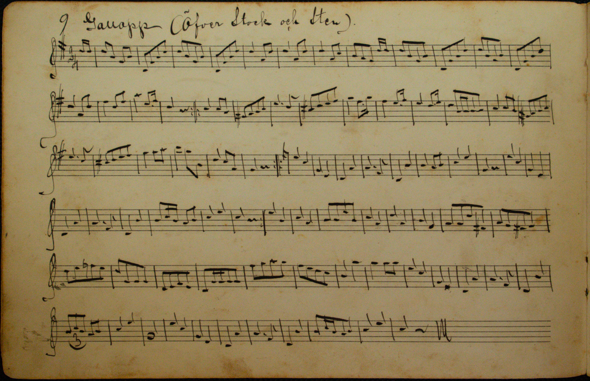
Sida 4.
9. Galopp (Öfver stock och
sten)
Tonart: G-dur. Taktart: 2/4.
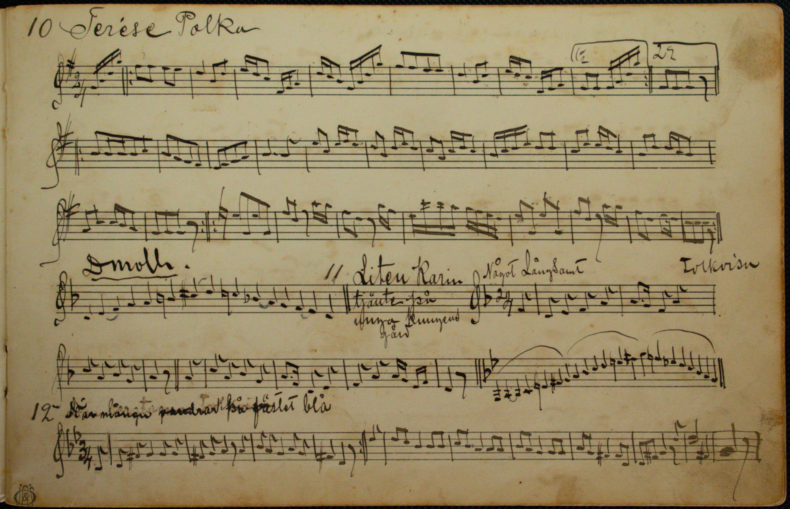
Sida 5.
10. Terése polka
Kompositör: Hans Christian Lumbye. Tonart: G-dur. Taktart:
2/4.
D-moll
Tonart: D-moll. Taktart: Ingen
taktart.
11. Liten Karin (tjänte på unga kungens
gård)
Tonart: D-moll. Taktart: 2/4. Anteckning: Folkvisa.
Något långsamt.
12. När månen vandrar på fästet blå
Textförfattare: Christina Lagerlöf. Tonart:G-moll. Taktart: 3/4.

Sida 6.
13. Wårblomman Mazurka
Kompositör: Carl Faust. Tonart: G-dur. Taktart: 3/4.

Sida 7.
14.Andante
Tonart: G-dur.
Taktart: 3/4.
H-moll
Tonart: H-moll. Taktart: Ingen
taktart. Anteckning: Skala.
15. Folkvisa
Tonart: H-moll.
Taktart: 3/4.
Sida 8.
16. Orden Francaise
(Lundbom)
Tonart: C-dur. Taktart: 2/4.
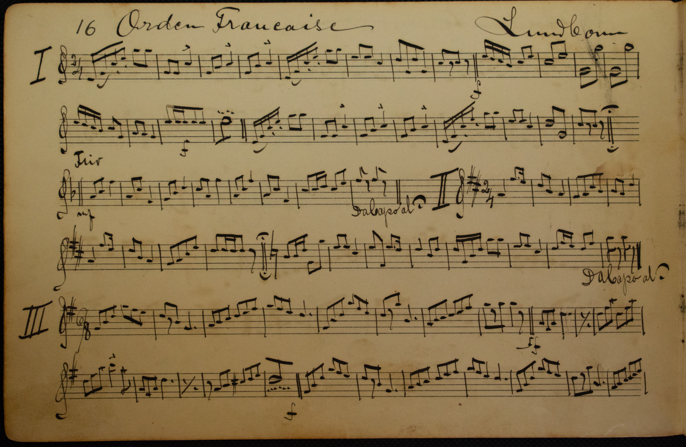
Sida 9.
16. Orden Francaise (Lundbom)
(fortsättning)
Tonart: C-dur. Taktart: 2/4.
17. Rullan
går
Tonart: A-dur. Taktart: 2/4.
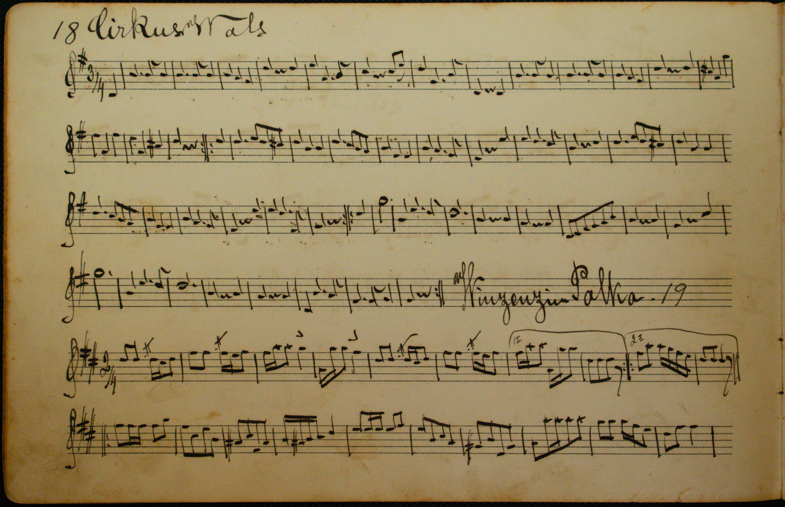
Sida 10.
18. Cirkuswals
Tonart:
G-dur. Taktart: 3/4.
19. Winzenzin polka
Tonart:
D-dur. Taktart: 2/4.
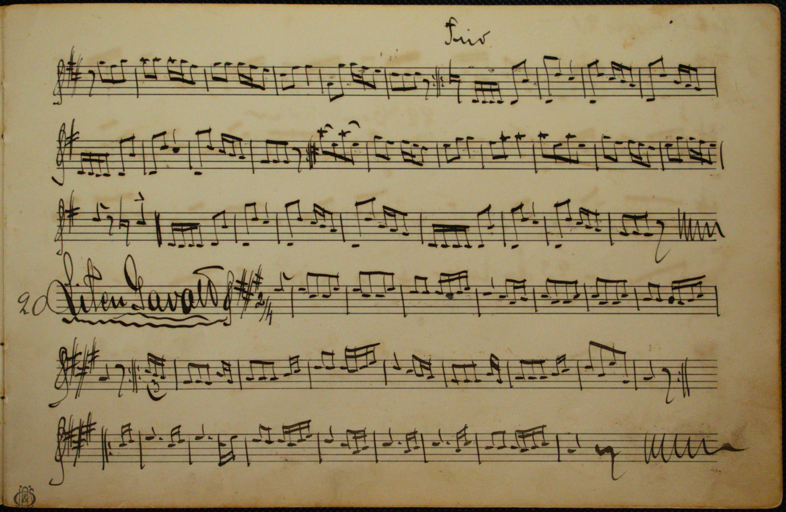
Sida 11.
19. Winzenzin polka
(fortsättning)
Tonart: D-dur. Taktart: 2/4.
20. Liten
Gavott
Tonart: A-dur. Taktart: 2/4.
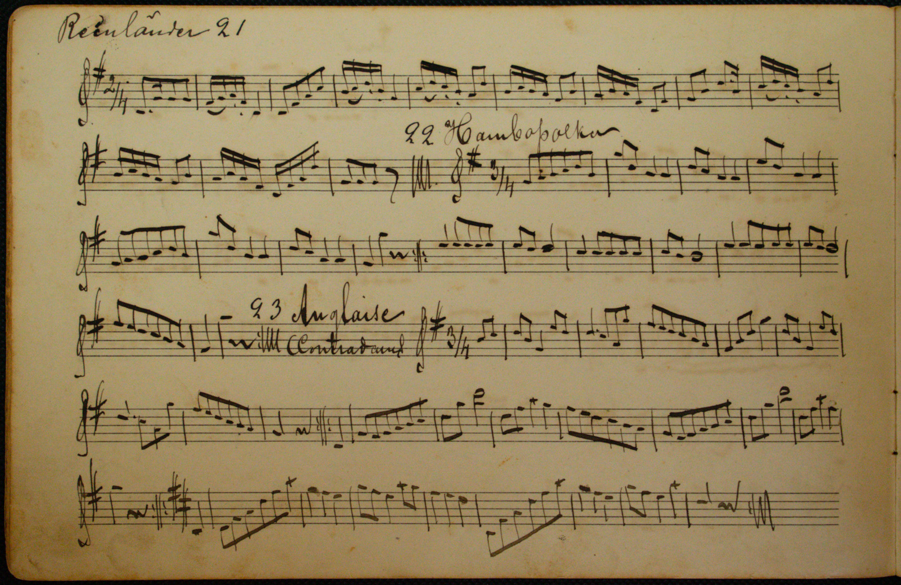
Sida 12.
21. Reinländer
Tonart:
G-dur. Taktart: 2/4.
22. Hambopolka
Tonart: G-dur.
Taktart: 3/4.
23. Anglaise Contradans
Tonart: G-dur.
Taktart: 3/4.
Sida 13.
24. Lilla Stina
Tonart: G-dur.
Taktart: 3/4.
Ess-dur
Tonart: Eb-dur. Taktart: ingen
taktart.
25. Ingen titel
Tonart: Eb-dur. Taktart: 3/4.
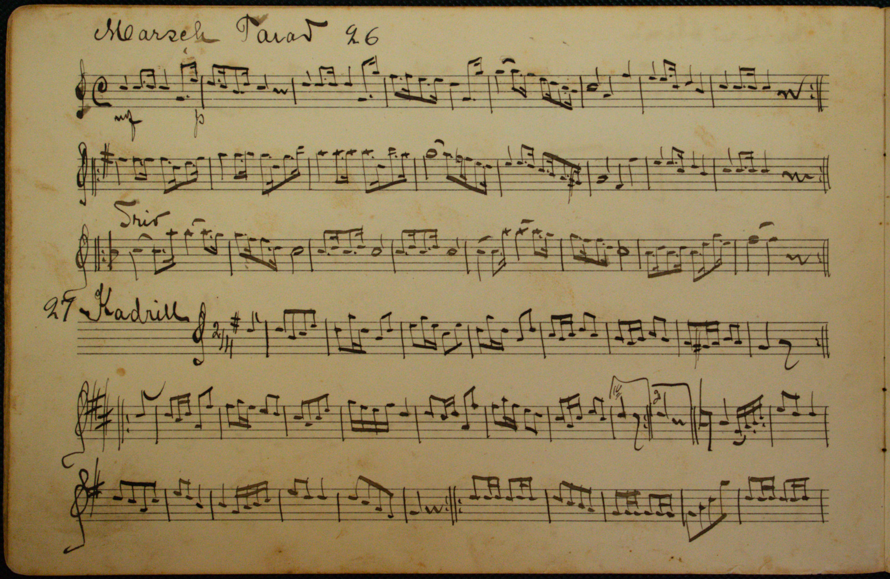
Sida 14.
26. Marsch Parad
Tonart:
C-dur. Taktart: 4/4.
27. Kadrill
Tonart: G-dur.
Taktart: 2/4.
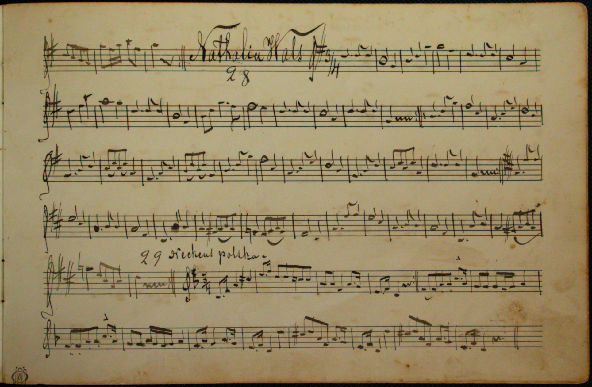
Sida 15.
28. Nathalia Wals
Kompositör:
Piotr Tjajkovskij. Tonart: G-dur. Taktart: 3/4.
29. Neckens
polka
Tonart: F-dur. Taktart: 3/4.
Sida 16.
30. Wals (ur Marinettes smås
skälmstycken)
Tonart: C-dur. Taktart: 3/4.
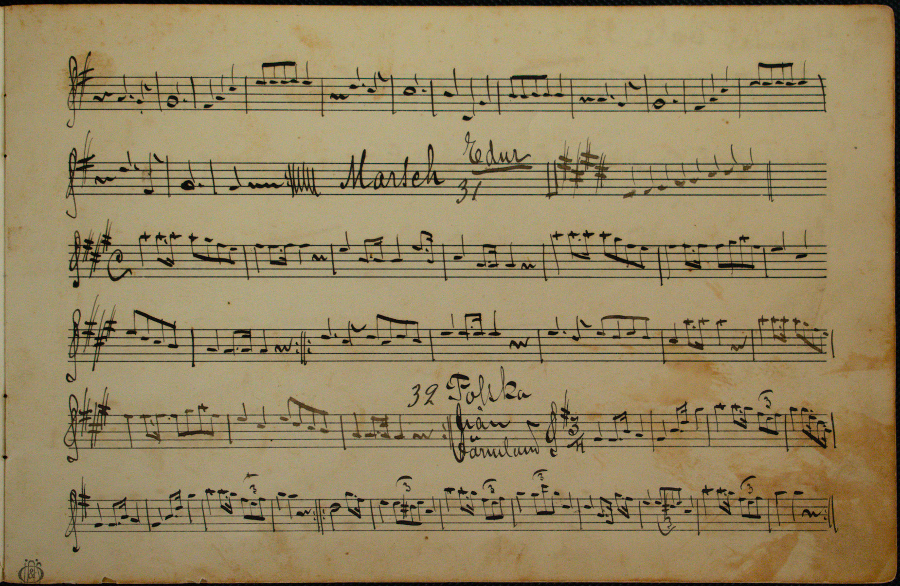
Sida 17.
30. Wals (ur Marinettes smås
skälmstycken)(fortsättning)
Tonart: C-dur. Taktart: 3/4.
31. Marsch Edur
Tonart: E-dur. Taktart: 2/4.
32. Polska
från Värmland
Tonart: G-dur. Taktart: 3/4.
Sida 18.
33. Gammal vals
Tonart:
G-dur. Taktart: 3/4.
34. Det var en lördag aften
Textförfattare: Svend Grundtvig. Tonart: F-dur. Taktart:
3/4
35. Sofia Wals
Tonart: Bb-dur. Taktart: 3/4.
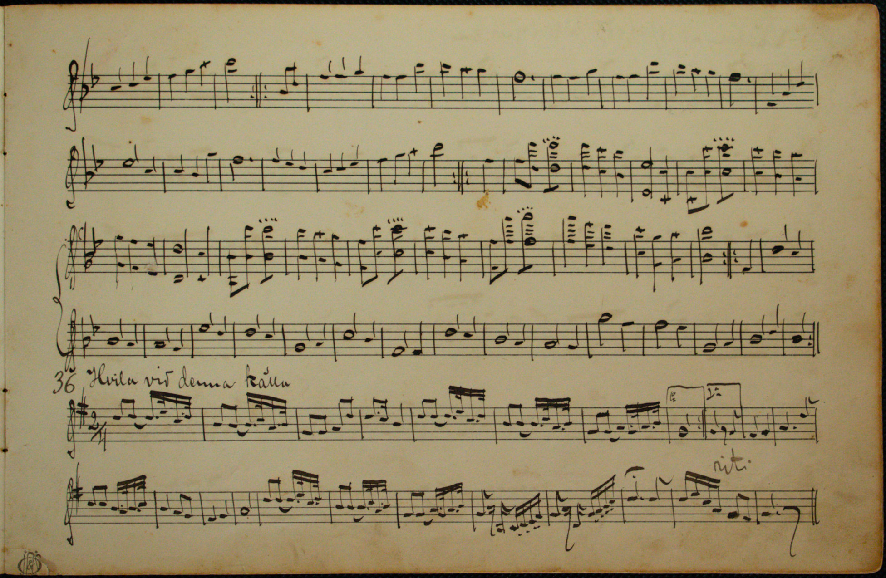
Sida 19.
35. Sofia Wals (fortsättning)
Tonart: Bb-dur. Taktart: 3/4.
36. Hvila vid denna källa
Textförfattare: Carl Michael Bellman. Tonart: G-dur. Taktart:
2/4.
Sida 20.
37. Lilla Äpplet Mazurka
Tonart: D-dur. Taktart: 3/4.
38. Mazurka
Tonart:
D-dur. Taktart: 3/4.
Sida 21.
38. Mazurka (fortsättning)
Tonart: D-dur. Taktart: 3/4.
39. Vid egen härd
Tonart:
G-dur. Taktart: 3/4.
Ingen titel
Tonart: D-dur. Taktart:
3/4.
Sida 22.
40. Vals
Tonart: G-dur.
Taktart: 3/4.
41. Galopp
Tonart: G-dur. Taktart:
2/4.
Sida 23.
41. Galopp (fortsättning)
Tonart: G-dur. Taktart: 2/4
32. Vals
Tonart: G-dur.
Taktart: 3/4.
Ass-dur
Tonart: Ingen tonart. Taktart:
Ingen taktart.
Sida 24.
43. Emmas dockkupletter (i
lustspelet Stabstrumpetaren)
Tonart: D-dur. Taktart:
2/4.
44. Botilla Polka
Tonart: A-dur. Taktart: 2/4.
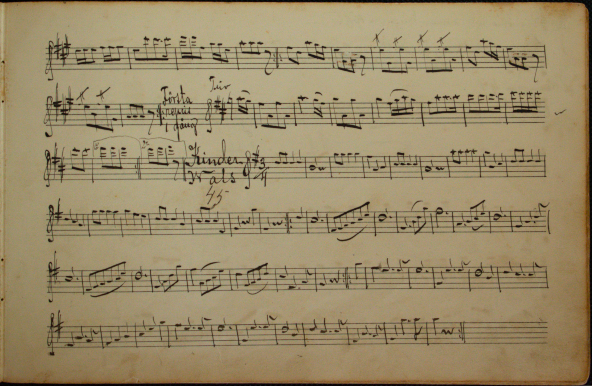
Sida 25.
44. Botilla Polka
(fortsättning)
Tonart: A-dur. Taktart: 2/4.
45. Kinder
Wals
Tonart: G-dur. Taktart: 4/4.
Sida 26.
46. Rocken snurrar, lampan
brinner
Textförfattare: Pehr Thomasson. Tonart: D-dur.
Taktart: 3/4.
47. Skåningen
Tonart: D-dur. Taktart:
2/4.
48. La violetta
Tonart: C-dur. Taktart: 3/4.
Antecking: Försth repris 1 gång.
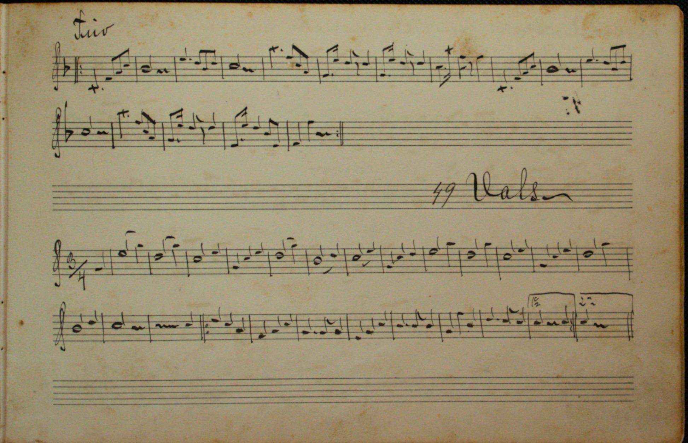
Sida 27.
48. La violetta (fortsättning)
Tonart: C-dur. Taktart: 3/4.
49. Vals
Tonart: C-dur.
Taktart: 3/4.
Sida 28.
50. General Lee's quick
marsch
Kompositör: Charles Young. Tonart: G-dur. Taktart:
3/4.
Sida 29.
50. General Lee's quick marsch
(fortsättning)
Kompositör: Charles Young. Tonart: G-dur.
Taktart: 3/4.
Sida 30.
51. Polkett
Tonart: A-dur.
Taktart: 2/4.
52. Vals
Tonart: G-dur. Taktart:
2/4.
53. Vi prisa högljutt gamla testam
Tonart:
D-dur. Taktart: 2/4.
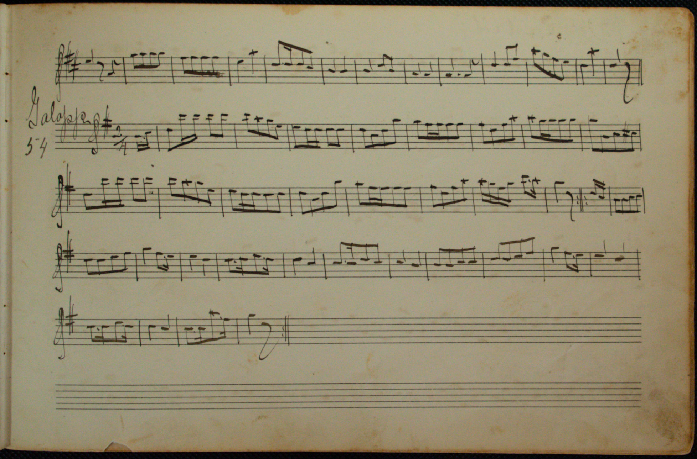
Sida 31.
53. Vi prisa högljutt gamla testam
(fortsättning)
Tonart: D-dur. Taktart: 2/4.
54.
Galopp
Tonart: G-dur. Taktart: 2/4.
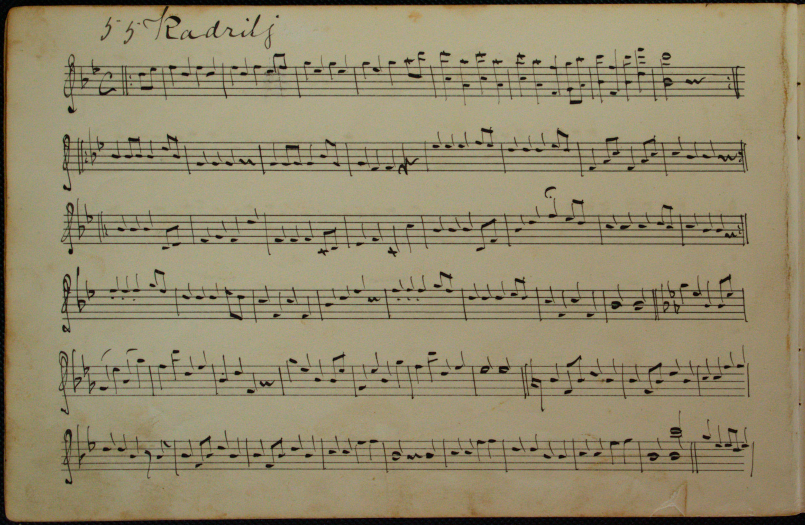
Sida 32.
55. Kadrilj
Tonart:
Bb-dur. Taktart: 4/4.
Sida 33.
55. Kadrilj (fortsättning)
Tonart: Bb-dur. Taktart: 4/4.
56. Galopp ur Stenbocken
Tonart: D-dur. Taktart: 2/4.
57. Ola modigs visa
Tonart:
G-dur. Taktart: 2/4.
Sida 34.
58. Tempo di vals, Efter
Balen
Kompositör: C Harris. Tonart: Bb-dur. Taktart: 3/4.
Anteckning: of Hearise, Refräng.
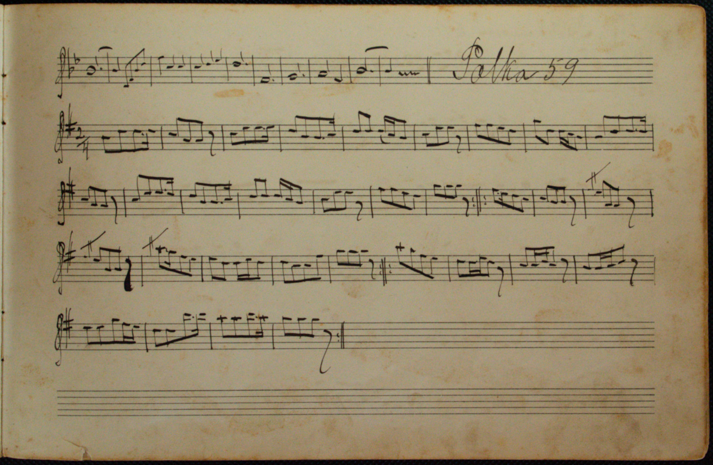
Sida 35.
58. Tempo di vals, Efter Balen
(fortsättning)
Kompositör: C Harris. Tonart: Bb-dur. Taktart:
3/4.
59. Polka
Tonart: G-dur. Taktart: 2/4.
Sida 36.
60. Vals Snöblomman
Kompositör: Harry Arnold, Felix Stahl. Tonart: G-dur. Taktart:
3/4.

Sida 37.
61. La Marseilliase Marsch
Kompositör: Claude Joseph Rouget de Lisle. Tonart: Bb-dur. Taktart:
4/4.
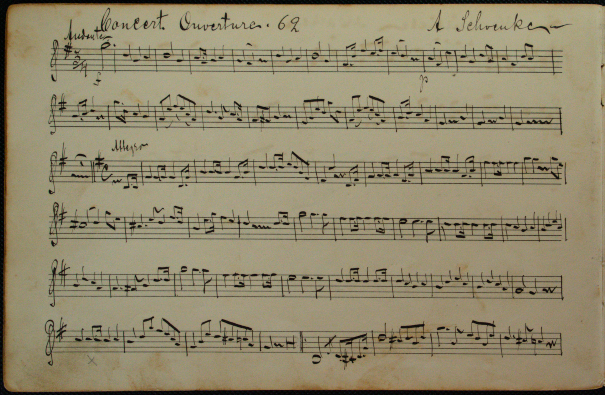
Sida 38.
62. Concert Overture, A
Jehovenke
Kompositör: A. Jehovenke. Tonart: G-dur.
Taktart: 3/4. Anteckning: Allegro.
Sida 39.
62. Concert Overture, A Jehovenke
(fortsättning)
Kompositör: A. Jehovenke. Tonart: G-dur.
Taktart: 3/4.
Sida 40.
63.Vals Donau Vellen (Dona
böljor)
Kompositör: I. Ivanovici. Tonart: C-dur. Taktart:
3/4.
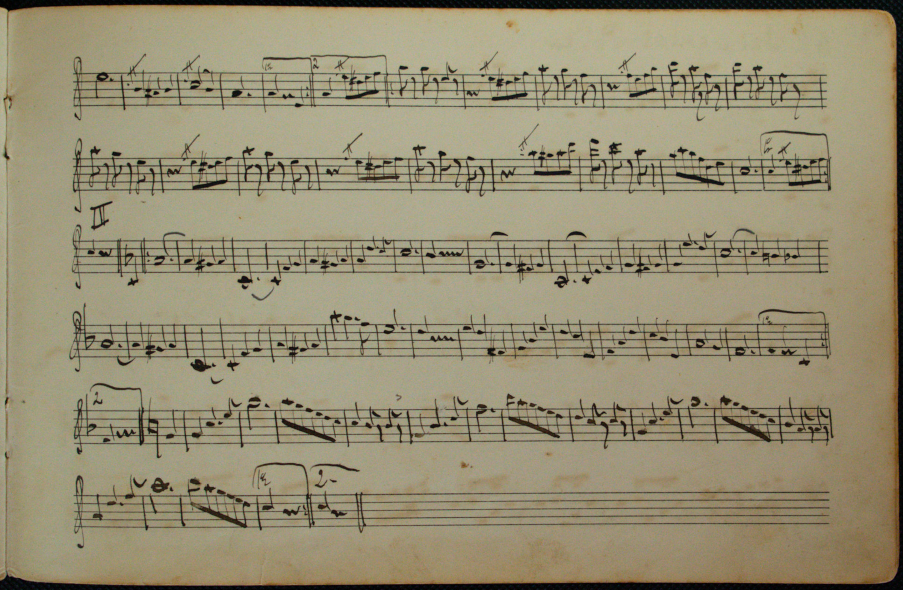
Sida 41.
63.Vals Donau Vellen (Dona böljor)
(fortsättning)
Kompositör: I. Ivanovici. Tonart: C-dur.
Taktart: 3/4.
Sida 42.
64.Glada gossars polka
Tonart: D-dur. Taktart: Alla breve.
65. Slängkyssen Polka
Mazurka
Kompositör: Carl Faust. Tonart: G-dur. Taktart:
3/4.
Sida 43.
65. Slängkyssen Polka Mazurka
(fortsättning)
Kompositör: Carl Faust. Tonart: G-dur. Taktart:
3/4.
66. Som stjärnan uppå himmelen så klar
Tonart:
C-dur. Taktart: 4/4. Anteckning: Andante
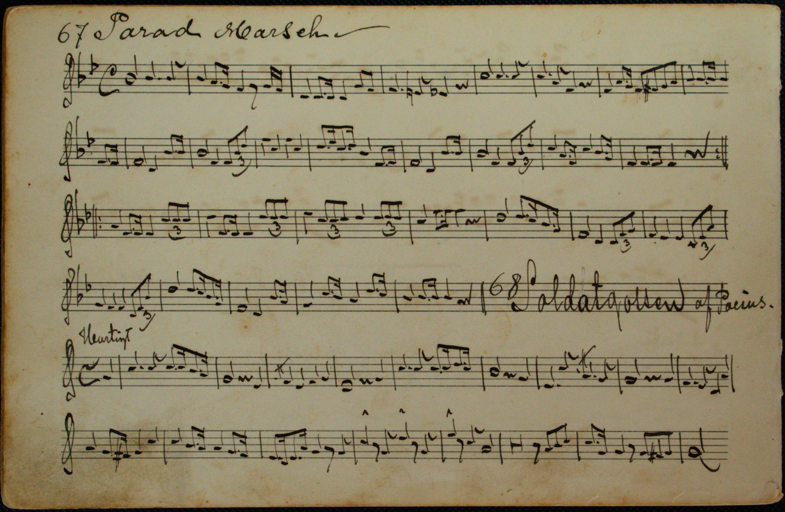
Sida 44.
67. Parad Marsch
Tonart:
Bb-dur. Taktart: 4/4.
68. Soldatgossen
Tonart:
C-dur. Taktart: 4/4.
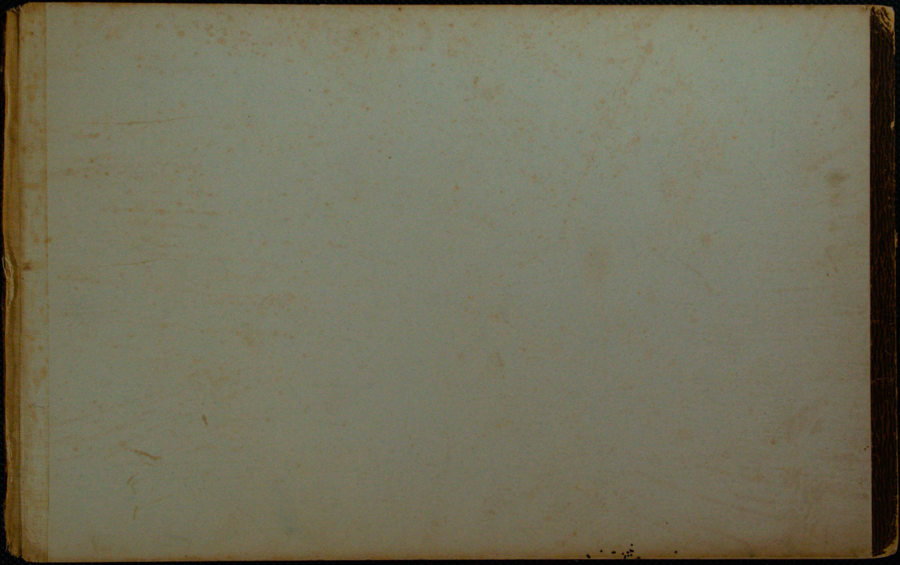
Eftersättsblad.

Baksida